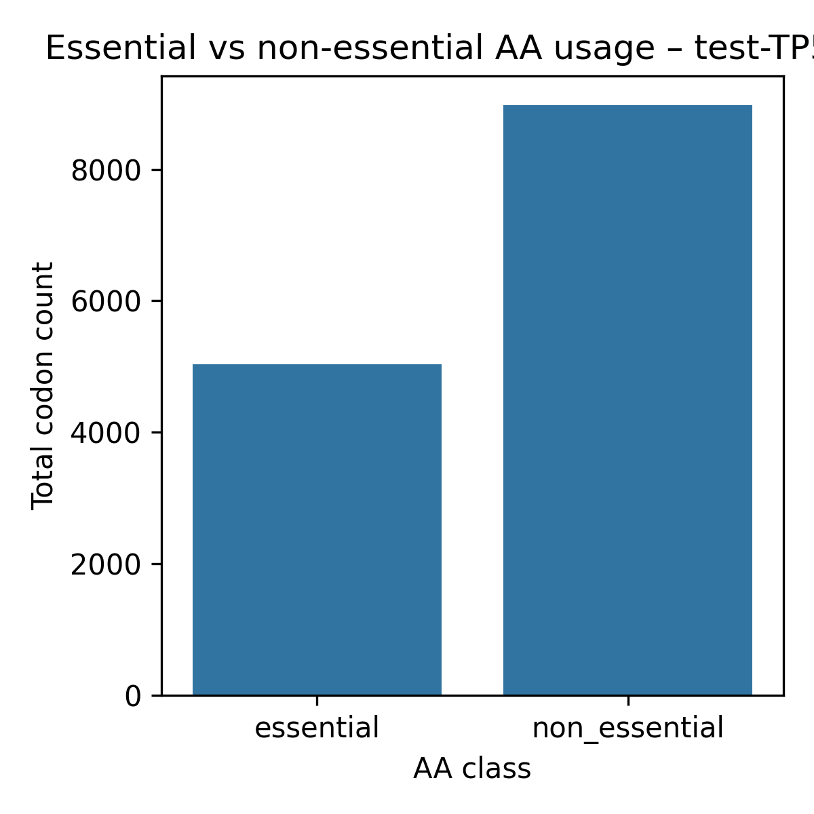

aProfiler report – test-TP53-nt
Input file: data\test-TP53-nt.fasta
Mode: codon
Tables
- codon_global_csv –
test-TP53-nt_codon_global.csv
- codon_per_site_csv –
test-TP53-nt_codon_per_site.csv
- codon_rscu_csv –
test-TP53-nt_codon_rscu.csv
- aa_usage_from_codons_csv –
test-TP53-nt_aa_usage_from_codons.csv
- aa_essential_summary_csv –
test-TP53-nt_aa_essential_summary.csv
Plots
codon_usage_plot

codon_rscu_heatmap_plot

aa_essential_bar_plot
